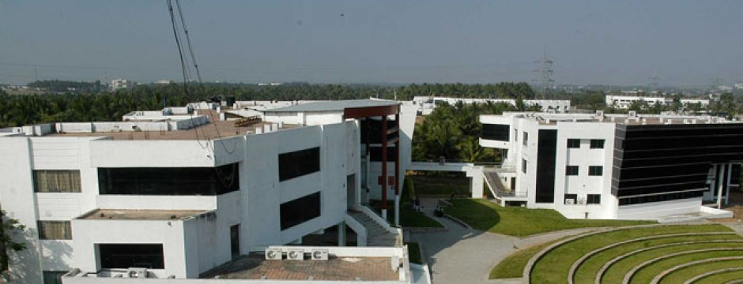

Karpagam College of Engineering is an Autonomous institution Affiliated to Anna University,Chennai and Approved by AICTE. It was established in the year 2000.The college is Accredited by NBA, TCS and Wipro .It offers 9 Undergraduate programmes and 5 Postgraduate programmes .It is an establishment of Karpagam Charity Trust and is one of the Karpagam Educational Institutions.
About Us

Karpagam College of Engineering, established in the Year 2000, is an Autonomous Institution, Approved by AICTE, New Delhi and Affiliated to Anna University, Chennai. The college offers various Under Graduate and Post Graduate Engineering programmes. The College is accredited by NAAC with ‘A’ Grade, TCS, Wipro and NBA accredited 4 departments Computer Science and Engineering, Electrical and Electronics Engineering, Electronics and Communication Engineering and Information Technology.
4500 students and 426 teaching and non-teaching staff member, Karpagam College of Engineering strives to impart quality education and an excellent career start to all its students. The Placement and Training facilities add a feather to its cap ensuring the students get placed on campus. The 10 Centers of Excellence strive to impart practical and experimental exposure to the students and serve as a window to the corporate world
Course Offered
B.E. Automobile Engineering
B.E. Civil Engineering
B.E. Computer Science and Engineering
B.E. Electronics and Communication Engineering
B.E. Electrical and Electronics Engineering
B.E. Electronics and Instrumentation Engineering
B.E. Electronics and Telecommunications Engineering
B.E. Mechanical Engineering
B.Tech. Information Technology
History
The Karpagam Charity Trust was founded in the year 1989 by Dr. R.Vasantha Kumar, a renowned philanthropist and industrialist. Initially the trust established Karpagam Arts and Science College in the year 1995 followed by Karpagam Polytechnic College in 1998 while Karpagam College of Engineering was started in the year 2000.Karpagam College of Engineering has been conferred with the autonomous status by the anna university since the academic year 2007-2008
Infrastructure
The Campus constitutes of Centres of excellence- IBM centre of excellence, Infosys Campus Connect, EMC Corporation, Oracle Workforce Development Centre, National Instruments LabView Academy, B&R Centre of excellence, MEMS Centre of excellence, Wipro- Mission 10X programme, Microsoft centre of excellence, Tech Mahindra centre of excellence for infrastructure management services; computer laboratories that provide full-time internet access for the users and laboratories of each core department that provides genuine facilities for practical observance; vast Seminar halls ; a central library with around 65,984 books plus around 6191 numbers of back volumes and 3057 projects and 3137 CDs from various branches of Engineering and Technology; well maintained hostel for boys and for girls with comfortable accommodation; a cafeteria with healthy and clean cuisine; a store that satisfies daily necessities ; also the college has a fleet of 20 buses that operates for the convenience of the faculty members and the students.